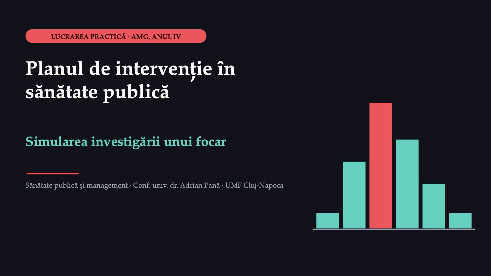
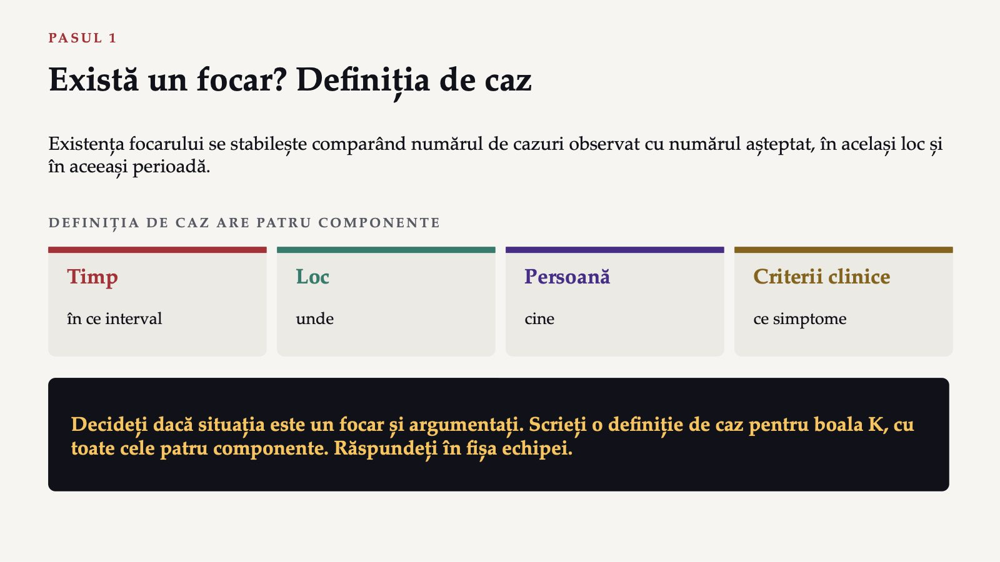
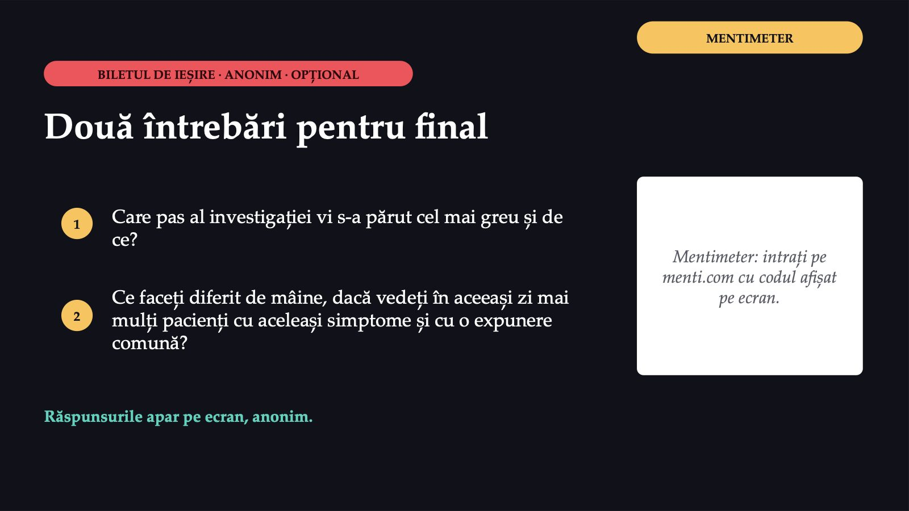

Planul de intervenție în sănătate publică

1 / 16Două ore, patru momente
![DESFĂȘURAREA Două ore, patru momente Deschiderea cele două părți ale lucrării; rolurile echipei Planul de intervenție o temă la alegere, de la problemă la indicatori Investigarea focarului cinci pași: de la definiția de caz la raportare Sinteza aceeași comunitate, două nevoi Echipele sunt cele din prima lucrare, de patru sau cinci persoane, cu aceleași roluri: calcul, verificare, raport, timp. Rolurile se schimbă între cele două părți, astfel încât fiecare membru să aibă cel puțin două roluri diferite. Datele sunt pe diapozitive și în documentul lucrării; internetul trebuie numai pentru fișa echipei în Forms.](diapozitive/LP02/002.jpg) 2 / 16
2 / 16La finalul lucrării veți putea
![OBIECTIVELE LUCRĂRII La finalul lucrării veți putea 1 Descrie elementele unui plan de intervenție de promovare a sănătății. 2 Formula un obiectiv măsurabil și calcula ce înseamnă el în număr de persoane și pe lună. 3 Alege indicatori de proces, de rezultat și de impact pentru o intervenție. 4 Aplica pașii investigării unui focar pe un scenariu simulat. 5 Identifica și urmări contacții cazurilor și stabili durata supravegherii lor. 6 Propune măsuri de control legate de verigile lanțului infecției și descrie raportarea cazurilor.](diapozitive/LP02/003.jpg) 3 / 16
3 / 16Un plan răspunde la șapte întrebări
![PARTEA ÎNTÂI · PLANUL DE INTERVENȚIE Un plan răspunde la șapte întrebări 1 Care este problema și pe cine afectează? 2 Ce nevoi și ce resurse are comunitatea? 3 Ce vrem să schimbăm și până când? 4 De ce credem că intervenția va funcționa? 5 Ce facem concret la fiecare nivel? 6 Cum aflăm dacă a funcționat? 7 Cine face fiecare lucru și când? Obiectivul este partea cea mai des greșită. Nu poate fi evaluat
„creșterea conștientizării privind screeningul”: nu spune nici de unde se pornește, nici unde trebuie să se ajungă. Poate fi evaluat
ce se schimbă, la cine, de la ce valoare de pornire, până la ce valoare și până la ce dată.](diapozitive/LP02/004.jpg) 4 / 16
4 / 16Indicatori de proces, de rezultat și de impact
![CUM AFLĂM DACĂ A FUNCȚIONAT Indicatori de proces, de rezultat și de impact PROCES arată dacă intervenția s-a desfășurat cum a fost planificată numărul sesiunilor de informare ținute, al persoanelor contactate, al invitațiilor trimise REZULTAT arată dacă s-a schimbat comportamentul sau accesul proporția persoanelor care au făcut testul, proporția fumătorilor care au încercat să renunțe IMPACT arată dacă s-a schimbat starea de sănătate incidența, mortalitatea, complicațiile; efectul asupra mortalității apare abia după ani, nu după luni La examen nu se cere încadrarea unui indicator ca „de rezultat” sau „de impact”; se poate cere distincția dintre indicatorii de proces și cei care măsoară o schimbare.](diapozitive/LP02/005.jpg) 5 / 16
5 / 16Alegeți o temă și scrieți planul
![FORMS SARCINA ECHIPEI Alegeți o temă și scrieți planul 1 Reducerea fumatului la elevii unui liceu din oraș 2 Creșterea participării femeilor la screeningul pentru cancerul de col uterin într-o comunitate rurală 3 Prevenirea excesului ponderal la copiii unei școli primare Planul cuprinde problema cu datele ei reale, populația-țintă, nevoile și resursele, un obiectiv măsurabil, modelul, câte o intervenție la trei niveluri, câte un indicator de proces, de rezultat și de impact, calendarul primelor șase luni și responsabilii. Fișa echipei: un singur telefon, cu contul UMF. Răspunsurile corecte apar după trimitere. marți grupele 4–5 miercuri grupele 1–3](diapozitive/LP02/006.jpg) 6 / 16
6 / 16600
![FIȘA ECHIPEI · FORMS VALORI IPOTETICE · COMUNITATEA A De la obiectiv la numărul de persoane 600 persoane în grupa-țintă a unui program de depistare prin testul T 120 dintre ele au făcut testul în ultimii trei ani Obiectivul: dublarea acoperirii în douăsprezece luni. Calculați 1 Acoperirea de pornire, în % 2 Câte persoane trebuie să fi făcut testul la sfârșit 3 Câte persoane trebuie testate în plus 4 Câte persoane pe lună Răspundeți în fișa echipei (pasul 2 al părții întâi). Verificatorul reface fiecare calcul.](diapozitive/LP02/007.jpg) 7 / 16
7 / 16120
![PARTEA A DOUA · VALORI IPOTETICE Căminul A, luni dimineață Asistentul medical al cabinetului primește telefoane de la mai multe familii: persoane care au participat sâmbătă, la ora 13:00, la o masă la căminul A au vărsături, diaree și crampe abdominale. 120 de participanți la masă 30 de persoane bolnave până la ora 10:00 0–2 raportări de boală diareică acută pe săptămână, de obicei 6–36 de ore, perioada de incubație a bolii K Probele de la câțiva bolnavi au plecat la laborator; rezultatele nu sunt încă disponibile.](diapozitive/LP02/008.jpg) 8 / 16
8 / 16Există un focar? Definiția de caz

9 / 16Curba epidemică
![PASUL 2 Curba epidemică Cazurile de boală K găsite după aplicarea definiției de caz tuturor participanților la masă (valori ipotetice). De la masă până la debut Cazuri sub 6 ore 2 6 până la sub 12 ore 9 12 până la sub 18 ore 17 18 până la sub 24 de ore 12 24 până la sub 30 de ore 6 30 până la 36 de ore 2 Pe foaie Desenați curba epidemică pe intervale de câte șase ore, cu timpul pe axa orizontală și numărul de cazuri pe axa verticală.
Verificați totalul cazurilor din tabel.
Ce tip de focar sugerează forma curbei și în ce interval se află cazul median?](diapozitive/LP02/010.jpg) 10 / 16
10 / 16Ratele de atac și alimentul suspect
![PASUL 3 Ratele de atac și alimentul suspect Alimentul Au consumat Bolnavi Nu au consumat Bolnavi Salată cu ou și maioneză 70 42 50 6 Friptură 100 40 20 8 Prăjitură cu cremă 60 28 60 20 Apă de la dozator 80 32 40 16 Valori ipotetice: cei 120 de participanți la masă, după consumul fiecărui aliment; bolnavii sunt numărați separat pentru fiecare aliment. Pentru fiecare aliment: rata de atac la consumatori, rata de atac la neconsumatori și riscul relativ; apoi rata de atac generală. Care este alimentul suspect și ce ar trebui verificat înainte ca ipoteza să fie considerată confirmată?](diapozitive/LP02/011.jpg) 11 / 16
11 / 16Miercuri: alte trei persoane bolnave
![PASUL 4 Miercuri: alte trei persoane bolnave Același tablou clinic. Niciuna nu a participat la masă și nu a consumat resturi aduse de la masă. Toate locuiesc cu participanți care s-au îmbolnăvit duminică. Debutul: la trei–patru zile după masă, în afara intervalului de incubație al expunerii de la căminul A. 1 Ce arată cele trei cazuri și ce alte explicații trebuie excluse? 2 Cine sunt contacții, ce li se cere și cât durează supravegherea lor? 3 Dacă fiecare caz are, în medie, trei membri ai familiei care nu au participat la masă, câte persoane trebuie urmărite?](diapozitive/LP02/012.jpg) 12 / 16
12 / 16Controlul și raportarea
![JOC DE ROL PASUL 5 Controlul și raportarea Fiecare echipă propune trei măsuri de control, fiecare legată de o verigă a lanțului infecției. SURSA veriga de la care pornește infecția CALEA DE TRANSMITERE cum ajunge infecția la alte persoane PERSOANA RECEPTIVĂ cine se poate îmbolnăvi Joc de rol, cel mult trei minute Medicul cabinetului a stabilit diagnosticul de caz suspect. Asistentul medical raportează focarul la direcția de sănătate publică, în numele cabinetului. Cealaltă echipă ascultă și notează ce informații au lipsit. Apoi scrieți în fișă informațiile transmise la prima raportare, în cel mult zece rânduri.](diapozitive/LP02/013.jpg) 13 / 16
13 / 16Formulele din cele două părți
![RECAPITULARE · CUM SE CALCULEAZĂ ȘI CUM SE CITEȘTE Formulele din cele două părți PLANUL Ritmul necesar: persoanele de testat în plus, împărțite la numărul de luni. 1 · FOCARUL Numărul de cazuri observat, comparat cu cel așteptat în același loc și în aceeași perioadă. 2 · CURBA Timpul pe axa orizontală, cazurile pe cea verticală; forma curbei sugerează tipul de focar. 3 · RATA DE ATAC Bolnavii dintr-un grup, împărțiți la toți cei din grup; riscul relativ este raportul dintre ratele de atac la consumatori și la neconsumatori. 4 · CONTACȚII Cazurile înmulțite cu numărul mediu de membri ai familiei, ca estimare; numărul real este mai mic dacă mai mulți bolnavi locuiesc împreună. 5 · CONTROLUL Fiecare măsură este legată de o verigă a lanțului infecției; raportarea începe de la stadiul de caz suspect. Răspunsurile corecte și explicațiile apar în formular, după trimitere.](diapozitive/LP02/014.jpg) 14 / 16
14 / 16Două părți, aceeași comunitate
![SINTEZA Două părți, aceeași comunitate 1 Un obiectiv fără valoare de pornire, țintă și termen nu poate fi evaluat. 2 Rata de atac la cei care au consumat un aliment, comparată cu cea de la cei care nu l-au consumat, arată alimentul suspect. 3 Măsurile de control se aplică cât mai devreme, fără a aștepta încheierea investigației. Raportorii prezintă, pe rând, alimentul suspect, forma curbei epidemice și măsura de control pe care o consideră cea mai urgentă. Aceeași comunitate are nevoie atât de investigarea rapidă a unui focar, cât și de un plan de prevenție pe termen lung.](diapozitive/LP02/015.jpg) 15 / 16
15 / 16Două întrebări pentru final

16 / 16Săgeți sau spațiu: navigare · O: vedere de ansamblu · N: notele prezentatorului · F: ecran complet · Esc: închidere